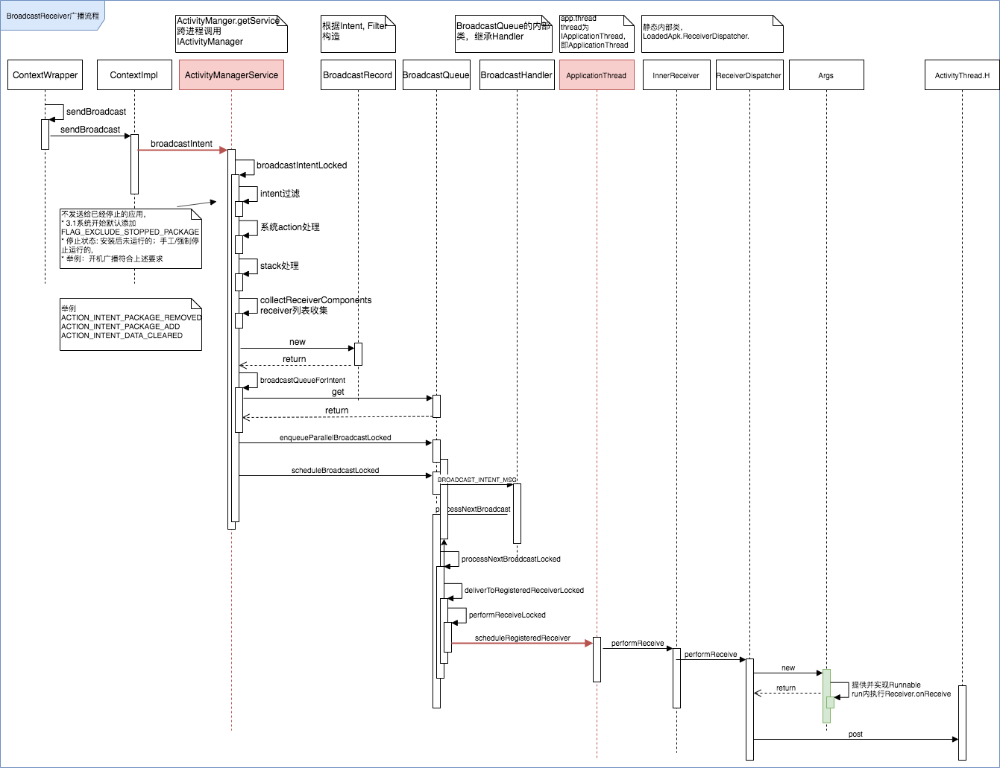
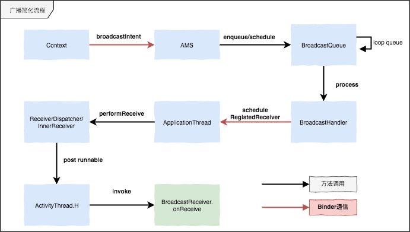

BroadcastReceiver启动流程
广播分为应用内广播和全局广播，本文分析全局广播的启动和使用源码实现。
通过源码分析我们要理解以下问题：
- BroadcastReceiver的onReceive是谁调用的
- 广播的ANR耗时是怎么实现的
- 从sendBroadcast到onReceive都经历了哪些关键步骤
时序图
通过分析源码，我们提取核心的调用流程，其中深红色箭头代表发生了跨进程调用。

核心环节分析
我们把整个流程精简一下，核心步骤如下图：

广播发送
广波发送是异步的，通过Intent标识特定广播，发送后方法立刻返回。包括普通广播和有序广播
- registerReceiver 注册广播接收者
- sendBroadcast(Intent) 发送普通广播
- sendBroadcast(Intent, String) 发送普通广播， 有权限要求
- sendOrderedBroadcast(Intent, String) 发送有序广播
- sendOrderedBroadcast(Intent, String, BroadcastReceiver, Handler, int, String, Bundle) 发送有序广播，并响应接收者的返回结果
发送流程
我们知道既然广播发起的时候可以设置那么多类型，比如有序无序，在发送流程中也有响应的处理关系，代码主要位于AMS.broadcastIntentLocked方法 概况一下大概是：
- 先循环处理并行广播
- 接着处理当前有序广播
- 最后获取并处理下条有序广播
* sendBroadcast
* ContextImpl.sendBroadcast
* AMS.broadcastIntent, broadcastIntentLocked
* Intent添加flag，不发送给已经停止的应用，3.1系统开始默认添加FLAG_EXCLUDE_STOPPED_PACKAGE
;停止状态包括:安装后未运行的，手工，强制停止运行的。如开机广播
* collectReceiverComponents,
* broadcastIntentLocked内部，根据Filter过滤，复合条件的生成broadcastRecord，然后放入broadcastqueue内，接着调用queue的scheduleBroadcastLocked进行分发
* 发送BROADCAST_INTENT_MSG给handler
* handler处理时，执行processNextBroadcast， processNextBroadcastLocked
* 针对无序广播，是保存在mParallelBroadcast中的，取出第一个，调用他的receivers然后遍历执行deliverToRegisteredReceiverLocked
* 内部再执行performReceiveLocked,调用app.thread.scheduleRegisteredReceiver
* 执行InnerReceiver.performReceive, ReceiverDispatcher.performReceive,
* 构造Args对象，他实现了Runnable，丢给ActivityThread.H执行，run方法中实现了onReceive
广播得到执行，并且在主线程上
广播超时
在发送广播的时候，注意点有一个BroadcastHandler，其中只有两个msg的处理逻辑：
- BROADCAST_INTENT_MSG 处理广播发送
- 处理广播超时
private final class BroadcastHandler extends Handler {
public BroadcastHandler(Looper looper) {
super(looper, null, true);
}
@Override
public void handleMessage(Message msg) {
switch (msg.what) {
case BROADCAST_INTENT_MSG: {
if (DEBUG_BROADCAST) Slog.v(
TAG_BROADCAST, "Received BROADCAST_INTENT_MSG");
processNextBroadcast(true);
} break;
case BROADCAST_TIMEOUT_MSG: {
synchronized (mService) {
broadcastTimeoutLocked(true);
}
} break;
}
}
}
根据调用关系反推，可以发现，有一处触发逻辑正好唯一BroadcastQueue中的processNextBroadcastLocked方法内，即通过Binder分发广播给广播接收者之后，同步发起了广播超时消息。
post BROADCAST_TIMEOUT_MSG < setBroadcastTimeoutLocked < broadcastTimeoutLocked < processNextBroadcastLocked
当没有待发送的消息中没有不受失效时间控制的消息时，会触发定时逻辑。
if (! mPendingBroadcastTimeoutMessage) {
long timeoutTime = r.receiverTime + mTimeoutPeriod;
if (DEBUG_BROADCAST) Slog.v(TAG_BROADCAST,
"Submitting BROADCAST_TIMEOUT_MSG ["
+ mQueueName + "] for " + r + " at " + timeoutTime);
setBroadcastTimeoutLocked(timeoutTime);
}
超时间隔mTimeoutPeriod在BroadcastQueue构造函数内传入，
根据前面的分析，我们知道队列是在AMS中get获取的,定位到ActivityManagerService的检索，可以在其构造函数中得到：
mFgBroadcastQueue = new BroadcastQueue(this, mHandler, "foreground", BROADCAST_FG_TIMEOUT, false);
mBgBroadcastQueue = new BroadcastQueue(this, mHandler, "background", BROADCAST_BG_TIMEOUT, true);
mBroadcastQueues[0] = mFgBroadcastQueue;
mBroadcastQueues[1] = mBgBroadcastQueue;
前后台广播分为两个queue，超时分别为10秒，60秒：
// How long we allow a receiver to run before giving up on it.
static final int BROADCAST_FG_TIMEOUT = 10*1000;
static final int BROADCAST_BG_TIMEOUT = 60*1000;
顺便看一下前后台广播的设置, Intent.FLAG_RECEIVER_FOREGROUND, 如果设置了前台flag则超时为10秒，没有设置则为60秒：
BroadcastQueue broadcastQueueForIntent(Intent intent) {
final boolean isFg = (intent.getFlags() & Intent.FLAG_RECEIVER_FOREGROUND) != 0;
if (DEBUG_BROADCAST_BACKGROUND) Slog.i(TAG_BROADCAST,
"Broadcast intent " + intent + " on "
+ (isFg ? "foreground" : "background") + " queue");
return (isFg) ? mFgBroadcastQueue : mBgBroadcastQueue;
}
小结
广播流程大致如此，现在解答一下几个问题：
1.BroadcastReceiver的onReceive是谁调用的
广播的直接调用者是ActivityThread.H这个Handler，是ReceiverDispatcher发送了一个Args.getRunnable，在run方法中执行的。
2.广播的ANR耗时是怎么实现的
广播耗时是在AMS中设置了定时器，BroadcastHandler处理超时消息，在broadcastTimeoutLocked中发送了ANR消息：
if (!debugging && anrMessage != null) {
// Post the ANR to the handler since we do not want to process ANRs while
// potentially holding our lock.
mHandler.post(new AppNotResponding(app, anrMessage));
}
ANR最后是一个弹框警告效果，他的实现是在AMS的mUiHandler：
- 消息为SHOW_NOT_RESPONDING_UI_MSG消息处理
- Dialog为AppNotRespondingDialog
3.从sendBroadcast到onReceive都经历了哪些关键步骤
广播流程参考上述整理，Context上下文通过sendBroadcast把intent发给了AMS，然后经过BroadcastQueuer入队，然后遍历了相关的广播接收者，由Broadcast Handler最终把消息通过Binder机制，给到了目标进程的ApplicationThread，然后在ActivityThread.H上被执行onReceive方法。